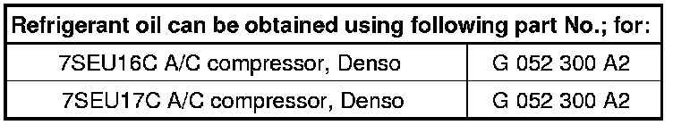

Refrigerant Oil
Refrigerant Oil
The special refrigerant oil for use with refrigerant circuits R134a only is no longer obtainable on the refrigerant/machine oil market.

* This quantity of refrigerant oil is in an original A/C compressor and equates to the total capacity.
* This amount of refrigerant oil is also supplied to the refrigerant circuit
Further information:
The refrigerant oil is very hygroscopic, therefore opened containers must be closed immediately after use to stop ingress of moisture.
Refrigerant oil, because of its chemical properties, must not be disposed of with engine oils or transmission oils.